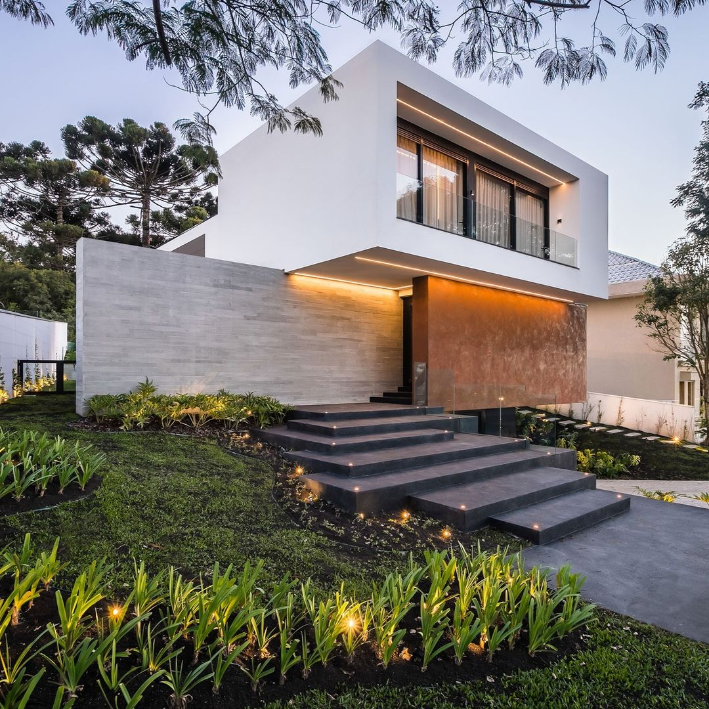

01
Casa HorizonteUberlândia · Residencial

CONSTRUÇÃO • ARQUITETURA • UBERLÂNDIA / MG
Projetamos e construímos residências autorais para quem acredita que alto padrão também é sentir, todos os dias, que está exatamente onde deveria estar.
A OTTOS
Construir para nós não é preencher metros quadrados. É interpretar um estilo de vida, organizar luz, matéria, escala e permanência — e transformar tudo isso em um endereço que tenha identidade.
Em Uberlândia, unimos engenharia, arquitetura e gestão para conduzir cada etapa com clareza e rigor.
Conheça nossa história →02 — PORTFÓLIO
Uma seleção de volumes, materiais e espaços que traduzem a assinatura OTTOS.


03 — SERVIÇOS
Uma experiência conduzida por uma única visão: fazer bem, com método e sem ruído.
Execução com controle de qualidade, cronograma e acabamento em cada detalhe.
Arquitetura autoral pensada para terreno, rotina, luz e personalidade.
Coordenação de fornecedores e etapas para manter previsibilidade do começo ao fim.
Requalificação de espaços com estratégia, preservando o que importa e elevando o resultado.
O verdadeiro alto padrão aparece quando cada decisão faz sentido.
04 — JOURNAL OTTOS
Arquitetura, construção, materiais, tendências e decisões práticas para quem quer construir melhor em Uberlândia.
Acessar o blog ↗05 — CONTATO
Conte brevemente o que você está planejando. A equipe OTTOS entra em contato para entender o projeto e próximos passos.